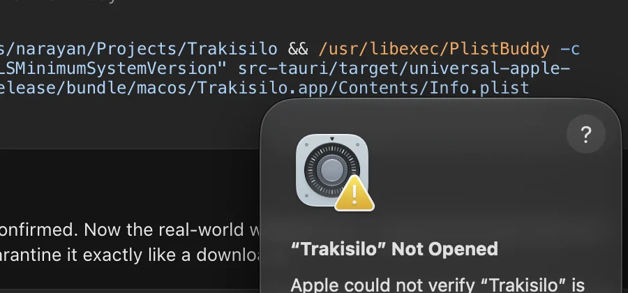
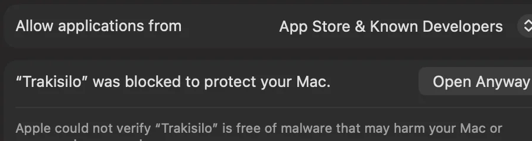
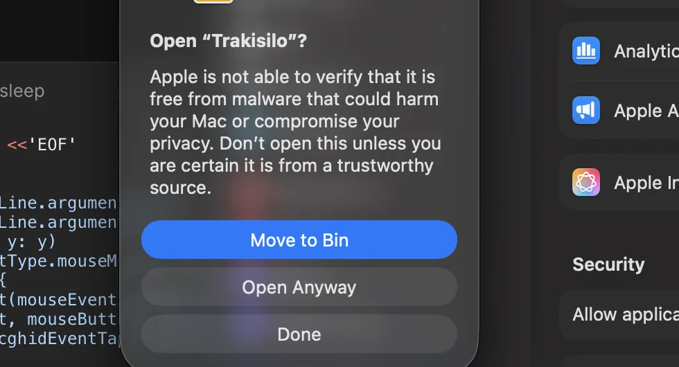
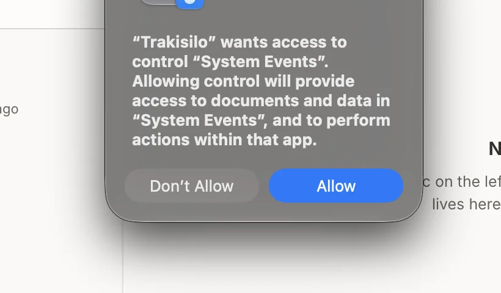
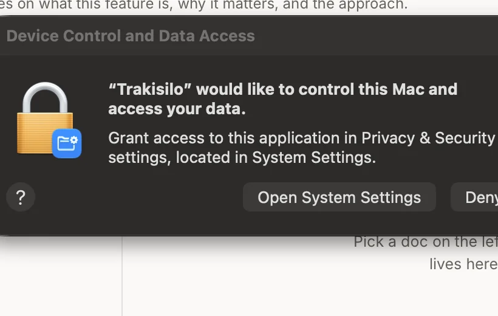
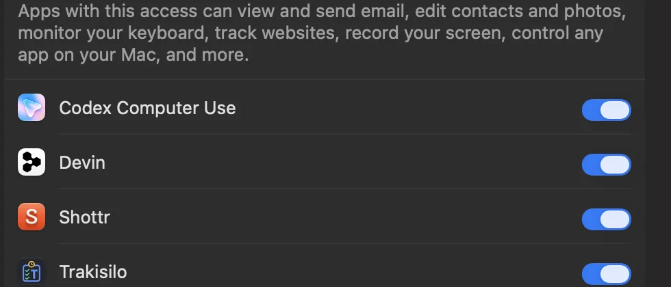

Free · No account · No cloud
Download Trakisilo
One private workspace for boards, clips, time and docs — on Windows and macOS.
macOS
Download for Macbrew install --cask nkunal1992/tap/trakisilo
sha256
ce4fbcd0fb6801d355ffa0b1b3149e63de2a53cb131390bfba9bc0f3380a35c8Unsigned build — first launch needs one approval (steps below).
Linux isn't supported yet — let us know if you need it.
First launch on Mac
Trakisilo is free and has no Apple Developer certificate (that's the $99/yr we'd rather not pass to you). macOS asks you to approve an unsigned app once per version — takes about 30 seconds.
1

2

3

Prefer Terminal? One command.
xattr -dr com.apple.quarantine /Applications/Trakisilo.app
Same effect as the steps above — removes the quarantine flag macOS adds to downloads. Only do this for apps you trust (this one is offline — zero network calls).
Turn on auto-paste (optional)
Quick-paste (⌘⇧V) opens the floating picker from anywhere — no permission needed. To have clips paste into the app you were just in, macOS asks for two permissions, once:
1

2

3

Updating
Windows
macOS
brew upgrade --cask trakisilo